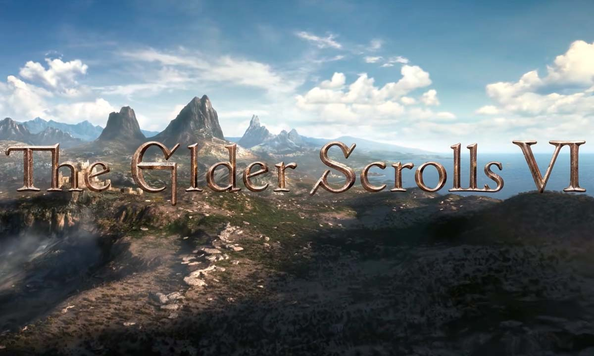
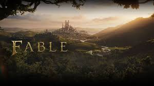

🎮 The Elder Scrolls VI
Fecha: 2025
Plataformas: PC, Xbox Series X/S
El esperado RPG de Bethesda con un mundo inmenso y gráficos de nueva generación.
Fecha: 2025
Plataformas: PC, Xbox Series X/S
El esperado RPG de Bethesda con un mundo inmenso y gráficos de nueva generación.
Fecha: 2025
Plataformas: PS5, Xbox Series X/S
La saga de Rockstar regresa con una historia más profunda y un mundo abierto realista.

Fecha: 2025
Plataformas: PC, PS5, Xbox, Switch
Secuela del aclamado metroidvania con nuevos enemigos, habilidades y escenarios.
Fecha: 2025
Plataformas: PC, PS5, Xbox Series X/S
Un mundo abierto en el universo de Star Wars con exploración y combates intensos.
Fecha: 2025
Plataformas: PS5
Un juego de acción y aventura protagonizado por Logan con un sistema de combate brutal.
Fecha: 2025
Plataformas: Nintendo Switch
La icónica saga de ciencia ficción regresa con una nueva aventura de Samus Aran.
Fecha: 2025
Plataformas: PC, Xbox Series X/S
El regreso de la legendaria saga de rol con una nueva historia y jugabilidad renovada.
Fecha: 2025
Plataformas: PC, PS5
El remake del clásico de terror psicológico con gráficos mejorados y nueva jugabilidad.
Fecha: 2025
Plataformas: PC, PS5, Xbox Series X/S
Bioware regresa con una nueva entrega de su épica saga de RPG de fantasía.